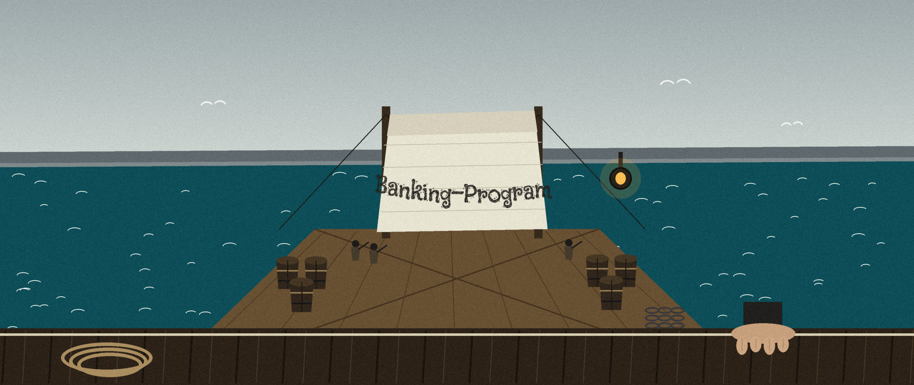
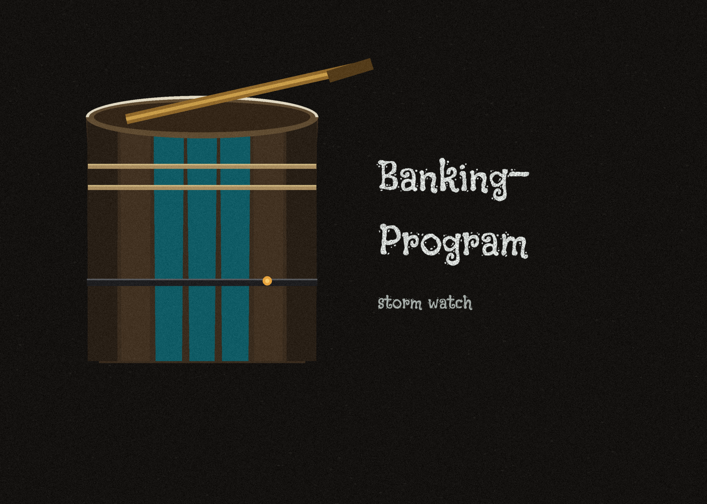
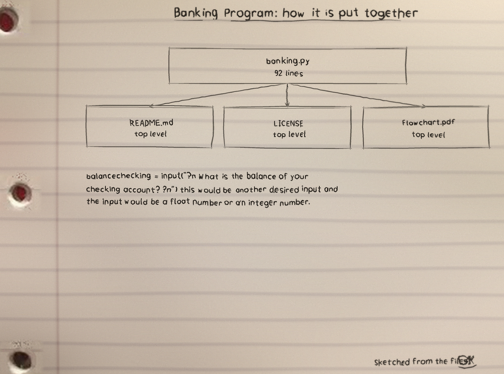
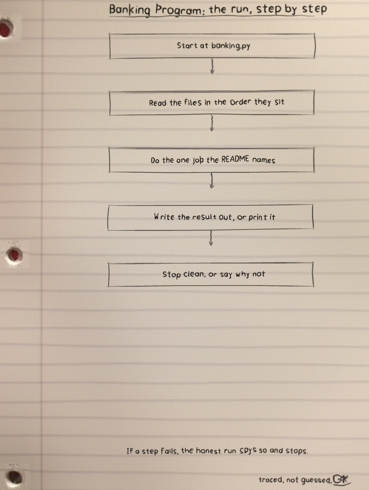
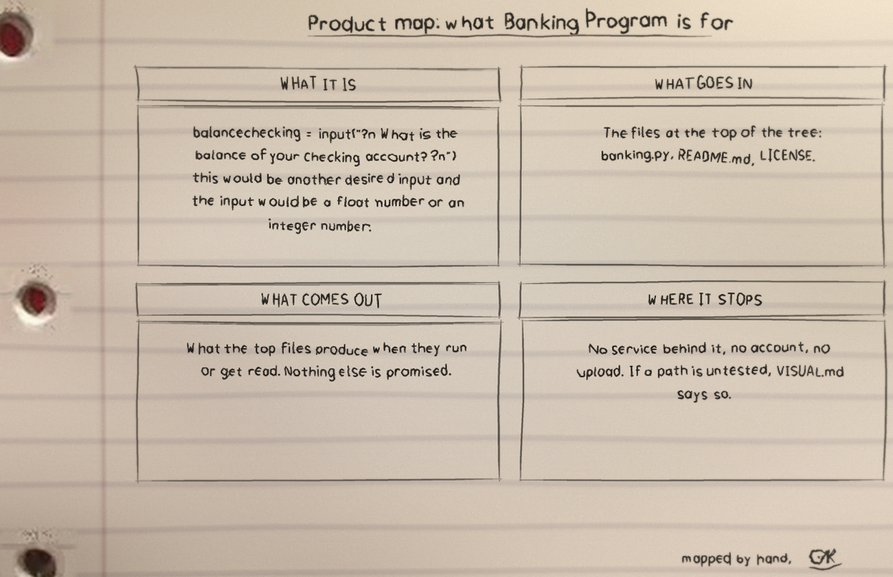
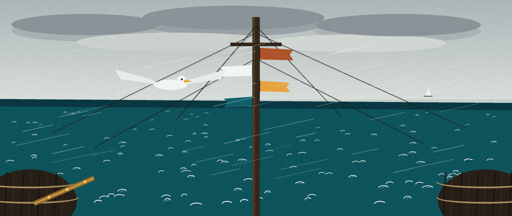

First log entry, in the program's own words: balancechecking = input("\n What is the balance of your checking account? \n") this would be another desired input and the input would be a float number or an integer number.
Banking Program: 4 files, 111 counted lines across Python 92, Markdown 19, as counted for this page. banking.py carries the most lines. An interactive Python program for one run only: enter the starting checking and savings balances, perform exactly one withdraw, deposit, or transfer, and print the resulting balance or balances. Nothing is saved between runs.
Python 3, the standard library alone (math and sys), nothing to install.
python3 banking.py
$ git clone https://github.com/Epsilon0xCell/Banking-Program.git
$ cd Banking-Program
From banking.py, line 1 on. It is not tidied for the page.
# -*- coding: utf-8 -*-
"""
Created on Thu Oct 19 14:14:18 2023
@author: cy83r-3x71nc710n
"""
# imports required libraries
import sys
# Grabs balance and checking amount
balance_checking = input("\n What is the balance of your checking account? \n")
balance_checking = float(balance_checking)
balance_saving = input("\n What is the balance of your savings account? \n")
balance_saving = float(balance_saving)
# Prints balance and checking amount
print("--------------------------------------")w, d, or t (the full words also work, in any case).c for checking or s for savings (any case).| Manoeuvre | What it does | Worked result |
|---|---|---|
Withdraw (w) | Subtracts from the chosen account only, and checks only that account. | 100 checking, 1000 savings, w, c, 50 gives 50.00 |
Deposit (d) | Adds to the chosen account, with no ceiling tied to existing funds. | 100 checking, 1000 savings, d, c, 50 gives 150.00 |
Transfer (t) | Moves money into the other account: c means checking to savings, s the reverse. | 100 checking, 1000 savings, t, s, 50 gives 950.00 and 150.00 |
Insufficient funds prints: You do not have that amount of money. Malformed numbers, infinite values, and closed input print: Please enter a number. Every fault exits with status 1. Balances format to two decimal places.
Correction to the count above: since that count was taken, a test file has joined the repository. test_banking.py now exists in the repo, and the tests run through python3 -m unittest. The old wording on this page, that no test files were counted, is corrected here.
| File | Lines |
|---|---|
banking.py | 92 |
README.md | 19 |
LICENSE | 0 |
Flowchart.pdf | 0 |
Names doing the work: no named functions in the snapshot. Files noted for the log: banking.py and Flowchart.pdf. Licence: GPL-3.0.
I sketch my projects on notebook paper so I have to understand them well enough to draw them. The full set, with the counts and how they were counted, is the Banking-Program-Visuals folder in the repo. Nothing is drawn over the binder holes. That is a rule, not a style.



